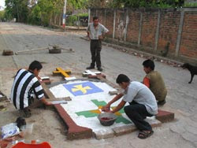

La semana santa
La Semana Santa es un tiempo para meditar y recapacitar sobre nuestra conducta.
Esto es lo que la Religión Católica ha enseñado por siglos y El Salvador no escapa a esa corriente, donde al menos
el 60% se considera Católico.
La Semana Mayor se celebra en todo el país, desde comunidades con solo unos cientos de habitantes, hasta los lugares
con mayor presencia de estas tradiciones, Sonsonate e Izalco.
Las procesiones que se llevan a cabo estos días son una de las más vistosas de El Salvador.
Paradójicamente Sonsonate e Izalco
son lugares con amplia tradición indígena, donde los españoles tuvieron una ardua tarea de sometimiento
a la religión y donde nuestros indígenas pudieron trabajar con ambas religiones a la par.
Los conquistadores pensaron que ya habí
an sometido a los Naturales, pero ellos habían encontrado la manera de seguir con sus costumbres
ancestrales y a la vez parecer que ya habían sido convertidos.
Durante estas celebraciones muy ricas en detalles se puede llegar a ver algunos indígenas sacerdote
o "chamán", también conocido como "brujos".
|
 |